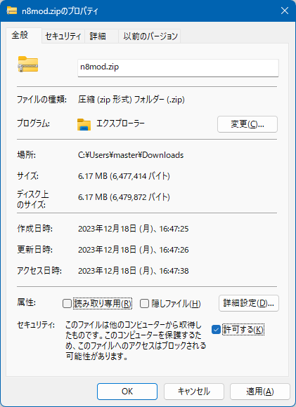
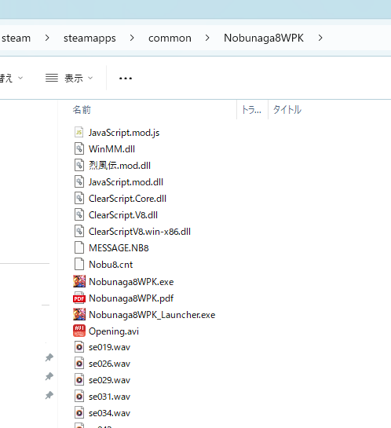

zipを解凍する際には、「プロパティ」から「ブロック解除(or 許可する)」してください。 「プロパティ」に「ブロック解除(or 許可する)」といった項目が無いようならこの作業は不要です。

ゲーム本体のファイルが上書きされたりはしません。 (ゲーム本体のファイル名とは被っていない)

Visual Studio 2022 C++ ランタイム x86版をインストールしたことが無い方はインストールしてください。 お手持ちのOSが64bitか32bitかには関わりなく、x86版のインストールが必要です。
以上で終了です。